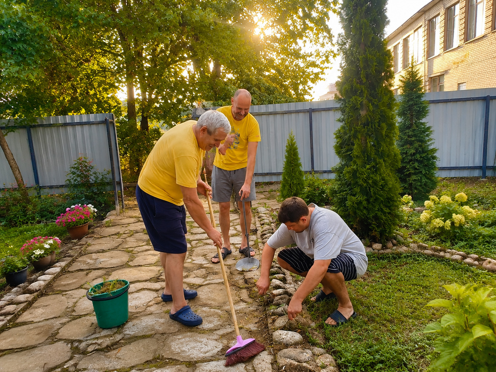

+375 29 784 18 20
|
+375 29 557 86 41
Поддержка реабилитационного центра «Анастасис» — это не только финансовая помощь. Участие, внимание и добрые дела помогают создавать условия для восстановления и развития центра.
Каждый человек может стать частью общего дела и помочь тем, кто делает шаг к изменениям.

Работа центра состоит не только из программы реабилитации, но и из множества ежедневных задач, которые помогают создавать спокойную и поддерживающую атмосферу.
Иногда помощь — это участие, распространение информации, добрые дела или поддержка конкретных инициатив.
Участие в благоустройстве территории, организации мероприятий и других задачах, которые помогают центру развиваться.
Рассказать о центре людям, которым может быть необходима поддержка. Иногда именно информация становится первым шагом к изменениям.
Мы открыты к взаимодействию с людьми и организациями, которые хотят поддерживать работу центра.
Здесь мы рассказываем о людях и организациях, которые поддерживают работу центра, а также делимся результатами оказанной помощи.
Описание сотрудничества или направления поддержки.

Описание оказанной помощи и достигнутого результата.
Описание оказанной помощи и достигнутого результата.
Описание оказанной помощи и достигнутого результата.
Любое участие помогает центру продолжать свою работу и поддерживать людей на пути восстановления.
Мы благодарим всех, кто разделяет желание помогать и быть частью добрых изменений.